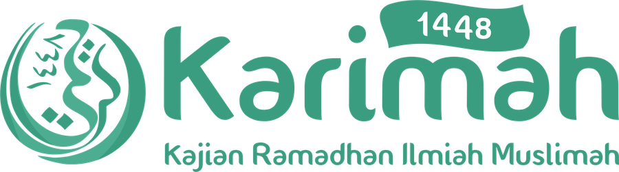

Hari 11 sampai 20
Level 2: Berdiri Dalam
"Allah memanggilmu untuk berdiri, bukan hanya di masjid, tapi di tengah realita dakwahmu."

Hari 11 sampai 20
"Allah memanggilmu untuk berdiri, bukan hanya di masjid, tapi di tengah realita dakwahmu."